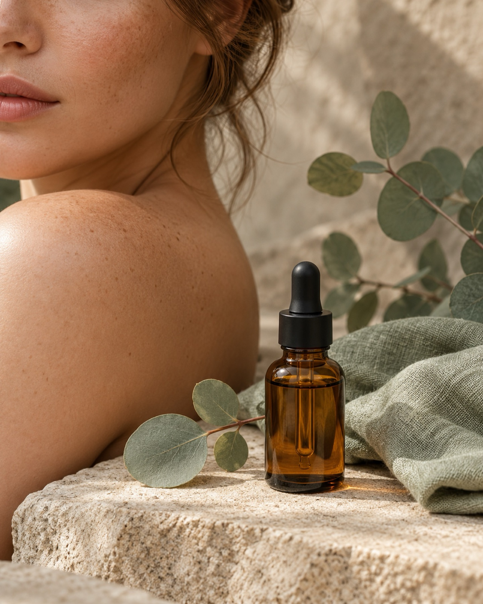

Gesichtsbehandlungen
Pflege, abgestimmt auf Ihren Hauttyp, mit Produkten von NATURE und Aesthetico.
Kosmetik & Fußpflege · Bielefeld-Hoberge
Gesichtsbehandlungen, Fußpflege und Augenpflege in Hoberge – ruhig, gründlich, persönlich.
Termin buchen
Behandlungen
Ob eine klassische Fußpflege oder eine Wellness-Auszeit mit Gesichtsbehandlung, Wimpern- oder Augenbrauenpflege: Alle Angebote in unserem Kosmetikstudio werden individuell für Sie gestaltet und auf Ihre Bedürfnisse abgestimmt.
Hautwissen
Trockene Haut?
Trockene Haut braucht Feuchtigkeit und etwas, das sie hält. Pflegen Sie mit Wirkstoffen wie Hyaluron und tragen Sie die Creme auf leicht feuchte Haut auf.
Schutz im Winter
Kälte und Heizungsluft fordern die Haut. Eine reichhaltigere Creme am Abend und sanfte Reinigung am Morgen helfen, das Gleichgewicht zu halten.
Pflege zwischen den Terminen
Zwei, drei Handgriffe am Tag genügen: reinigen, Feuchtigkeit geben, tagsüber schützen. Welche Produkte passen, zeigen wir Ihnen gern.
PMU Freckles
Bei PMU Freckles werden zarte Pünktchen mit Permanent Make-up in die Haut gesetzt, für einen natürlichen, leichten Look ohne Make-up.
Team
Mein Name ist Dorothee Körner und ich arbeite zusammen mit meiner Kollegin Charlie als Kosmetikerin im schönen Hoberge in Bielefeld. Mit unserer Arbeit möchten wir anderen Menschen helfen, sich in ihrer Haut rundum wohl zu fühlen und eine kleine Auszeit in ihren Alltag zu integrieren.
Uns ist es besonders wichtig, zu zeigen, dass Kosmetik natürlich, leicht und sehr wohltuend sein kann.
Inhaberin und Kosmetikerin. Sie begleitet Gesichtsbehandlungen, Fußpflege und Augenpflege.
Kosmetikerin im Team, ruhig, sorgfältig und mit einem Blick für Details.
Bewertungen
Ich fühle mich hier rundum gut aufgehoben. Die Behandlung war so wohltuend, dass ich am liebsten gleich den nächsten Termin gebucht hätte.
Freundlich, ruhig und mit viel Zeit für meine Fragen. Meine Füße waren noch nie so gut versorgt.
Das Lashlifting sieht ganz natürlich aus und ich habe ein gutes Gefühl bei der Beratung bekommen.
FAQ
Am einfachsten online über unsere Terminbuchung. Sie erreichen uns aber auch gern telefonisch unter 0521 58819219.
Das kann passieren. Geben Sie uns bitte möglichst früh Bescheid, damit wir den Termin an jemand anderen vergeben können. Wir danken Ihnen für Ihr Verständnis.
Das hängt von der Behandlung ab. Bei der Buchung sehen Sie die jeweilige Dauer, und bei Fragen beraten wir Sie gern vorab.
Nein, kommen Sie einfach so, wie Sie sind. Wenn Sie besondere Hautprobleme oder Allergien haben, sagen Sie uns das bitte im Gespräch.
Ja, Gutscheine können Sie online über unsere Terminbuchung bestellen.
Termin & Kontakt
Selbstverständlich können Sie alle Behandlungen auch online buchen.